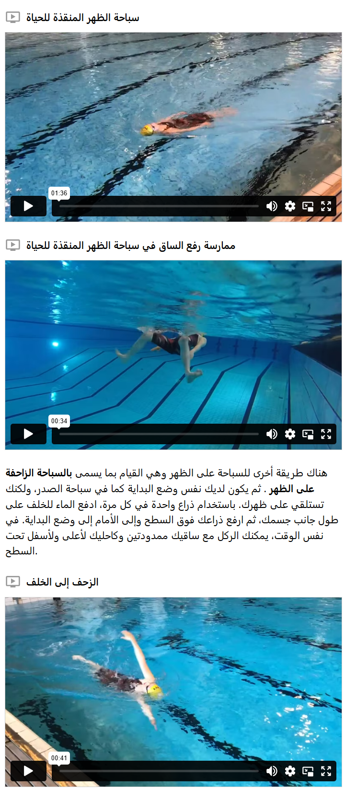

سباحة الظهر
أكثر طريقة شائعة للسباحة على الظهر هي الطريقة المستخدمة عند إنقاذ شخص في الماء، ولهذا تُسمى أيضًا سباحة الظهر للإنقاذ. في هذه الطريقة، تستخدم نفس تقنية الساقين كما في سباحة الصدر، لكن مع حركة مختلفة للذراعين. في هذا الأسلوب، تدفع نفسك إلى الأمام بواسطة الذراعين من خلال دفع الماء إلى الأسفل باتجاه القدمين على جانبي الجسم. تبدأ حركة الذراعين على مستوى الإبطين وتدفع اليدين حتى الفخذين، ثم تعيد الذراعين بمحاذاة الجسم إلى وضعية البداية. للحصول على وضعية أفضل في الماء، بحيث يكون الجسم أقرب إلى سطح الماء، يجب أن تُبقي الرأس داخل الماء مع تثبيت النظر إلى السقف.
